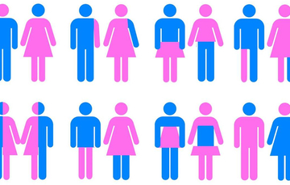

Equidad Masculina
Edward O. Laumann afirma que en los países en los que se ha logrado mayor avance en la equidad entre los géneros, es decir, en la igualdad de derechos y oportunidades entre mujeres y hombres, ambos tienen una vida sexual más satisfactoria. Esto si se hace la comparación con naciones en las que la sexualidad está centrada en los hombres, o sea, las sociedades patriarcales, en las que ellos controlan la sexualidad femenina y cuyo castigo consiste en que los niveles de bienestar sexual (femenino y masculino) son muy bajos. La noticia ha creado gran entusiasmo y dio la vuelta al mundo a velocidad vertiginosa, pues el trabajo de quien es considerado uno de los mayores expertos en sociología de la sexualidad acaba de aparecer apenas en el número de abril de los Archives of Sexual Behavior. Pero, a pesar de que esta primicia, basada en un trabajo científico, pudiera llenar de júbilo a quienes luchan por la equidad, pues implica una ventaja en un aspecto clave sobre el sistema patriarcal, vale la pena preguntarse si todo esto es cierto. La duda surge porque en el conjunto de naciones avanzadas en el terreno de la igualdad, en los cuales se sostienen los resultados del estudio, los autores incluyen uno que está muy alejado de eso: México. La hipótesis es buena, pero el trabajo tiene deficiencias importantes. La materia prima del artículo surge de un estudio realizado entre 2001 y 2002, patrocinado por la farmacéutica Pfizer titulado: Estudio global sobre actitudes y conductas sexuales. Por primera vez se exploró la sexualidad en personas mayores (entre 40 y 80 años); se incluyó a 27 mil 500 individuos, en igual proporción mujeres y hombres, de 29 naciones. La colección de datos del proyecto Pfizer, obtenidos mediante entrevistas, ha sido de gran utilidad, ya que ha dado lugar a más de una docena de artículos sobre sexualidad humana publicados en las revistas más prestigiadas en este campo. Mas en este caso, Laumann y sus colegas quisieron encontrar en esos datos respaldo para la idea de que a mayor equidad de género, mayor satisfacción sexual. Para ello dividen a las 29 naciones en tres grupos: A) con altos niveles de satisfacción sexual, en el que aparecen Australia, Austria, Bélgica, Canadá, Francia, México, Nueva Zelanda, Sudáfrica, España, Suecia, Alemania, Reino Unido y Estados Unidos; B) con nivel medio de satisfacción sexual como Argelia, Brasil, Egipto, Israel, Italia, Corea, Malasia, Marruecos, Filipinas, Singapur y Turquía; C) con bajos niveles de satisfacción sexual, entre los que se encuentran China, Indonesia, Japón, Taiwán y Tailandia. Pero, ¿cómo se evalúa el grado de satisfacción sexual? Se trata de una valoración subjetiva que los miles de entrevistados hacen sobre ellos mismos. No voy a incursionar aquí en el debate sobre el valor de estas estimaciones; los detalles metodológicos pueden consultarse en el propio trabajo, al que se puede acceder gratuitamente en la página electrónica de la Universidad de Chicago. En fin, en la investigación citada se emplean cuatro indicadores: placer físico (PF), cuyos promedios en el primer grupo expresados como porcentajes son 63.7 hombres y 59.9 mujeres; para el segundo grupo de naciones es de 45.1 y 36.3, y para el tercero de 24.9 y 19.8. Los valores más altos corresponden a Austria, donde el placer físico durante el sexo lo reportan 79.7 por ciento de los hombres, y Canadá, que expresan 67.8 por ciento de las mujeres. En el otro extremo se encuentra Japón, con 17.6 en hombres y 9.8 en mujeres. Otro parámetro es el placer emocional (PE), cuyos promedios para el primer grupo en hombres y mujeres, respectivamente, son 71.2 y 68.8; para el segundo grupo son 52.1 y 40.9, y para el tercero: 29.9 y 23.3. El mayor placer emocional es reportado también por Austria, tanto en hombres como en mujeres: 83.4 y 70.6, respectivamente, y el menor en Indonesia, donde sólo 18.5 por ciento de los varones y 19.9 de las mujeres obtienen placer emocional mediante el sexo.
